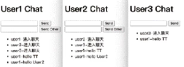
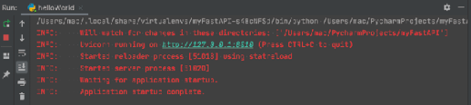
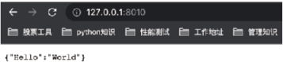
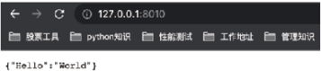
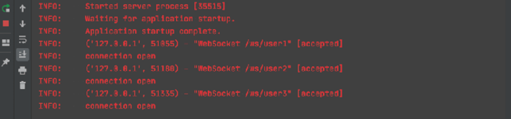
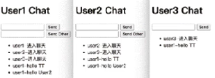

首页 > 编程笔记
FastAPI框架入门教程（简明版）
Web 应用框架可以帮助我们高效地编写 Web 应用。
当我们在浏览器访问一个网址，发起 HTTP 请求，这时 Web 应用框架就负责处理这个请求，分配不同的访问地址到相应的代码，然后生成 HTML，创建带有内容的 HTTP 响应。
借助Web应用框架，我们可以不用编写处理HTTP请求与响应等底层代码。
然后就是以微小和可扩展著称的 Flask，Flask 的发展势头很迅猛，Docker 官方的很多示例都使用了 Flask。
当前，有一定规模的团队都会顺应前后端分离的潮流。本教程主要讲解近两年“横空出世”的 Python 后端服务接口快速开发框架 FastAPI。
FastAPI 是一个基于 Python 的 Web 应用后端开发框架，它的开发效率高，具有较少的代码量；它在开发完成后会自动生成 API 使用文档；它基于 Pydantic，可以方便地实现数据校验；它具有更高的性能，支持 ASGI（asynchronous server gateway interface，异步服务器网关接口）规范，也就是支持异步和 WebSocket。
总而言之，Web 应用框架主要用来搭建一些简单的平台，如接口测试平台、mock 平台等，这要求应用框架开发效率高、学习成本低。
FastAPI 具有如下特性：
简单的 Web 应用开发只需要4步即可完成。
下面我们创建一个 helloWorld.py 文件，展示如何在 PyCharm 中使用 FastAPI 开发一个简单的应用。注意，文件名字要和启动服务的 APP 名字相同，具体实现如代码清单1所示。
代码清单1：helloWorld
ASGI 帮助 Python 在 Web 应用框架上和 Node.js 及 Go 相竞争，目标是获得高性能的 IO 密集型任务。
Uvicorn 是基于 uvloop 和 httptools 构建的一种高效的 ASGI 服务器，负责从客户端接收请求，将请求转发给应用，将应用的响应返回给客户端。我们向 Uvicorn 发送请求，Uvicorn 解析请求并转发给 Python 程序的 app 处理请求，并将处理结果返回。
可以认为，Uvicorn 和 Apache、Nginx 类似的东西。
Gunicorn 是成熟的、功能齐全的服务器，Uvicorn 内部包含 Guicorn 的 workers 类，允许运行 ASGI 应用，这些 workers 继承了 Uvicorn 高性能的特点，并且可以使用 Guicorn 来进行进程管理。这样我们动态增加或减少进程数量，平滑地重启工作进程，或者升级服务器而无须停机。
FastAPI 推荐使用 Uvicorn 来部署应用，但在生产环境中，Guicorn 大概是最简单的管理 Uvicorn 的方式。在部署生产环境时，我们推荐使用 Guicorn 和 Uvicorn 的 worker 类。
当我们基于 Django 框架开发 Web 应用时，能够通过命令创建出一个项目，并且整个项目结构清晰、规整，而类似 Flask、FastAPI 这些轻量级的框架项目组织需要我们自己来做，清晰、规范和合理的项目组织结构，对开发的效率和质量都有很大的提高。
FastAPI 提供了类似 Flask 中 Blueprints 功能的工具，它可以在保持灵活性的同时构建应用。子包中的每一个模块需要解耦开，此时可以使用 APIRouter 进行管理，可以理解为小型的 FastAPI 应用，然后将各个部分组合到 FastAPI 主体上即可。
依据此原理，下面我们构建工厂模式创建 FastAPI 项目示例 myFastAPI，供大家借鉴。
我们把项目划分为5个目录，分别为 api、extensions、settings、utils 和 tests。当然，大家可以对这些目录做适当的裁剪或修订。
该项目实例是基于 pipenv 构建的，所以通过 Pipfile 和 Pipfile.lock 文件进行依赖的管理。在项目工程目录下，使用命令行执行命令 tree-FC，即可显示如下的项目树结构：
下面示例展示了如何用 Python 来定义一个数据模型类，用 Pydantic 来校验数据：
假设 URL 为 http://127.0.0.1:8080/items/abcd，那么路径 path 就是 /items/abcd。
请看下面的代码：
这种参数直接在函数中定义即可：
示例如下：
示例如下：
示例如下：
GET 请求的参数有两种，一种是查询参数（param参数），一种是路径参数（url参数）。当声明路径参数以外的其他函数参数时，FastAPI 会将其自动解析为查询参数。
和路径参数不同，查询参数可以是可选非必填的，也可以具有默认值，即在方法中声明的参数就是查询参数。示例如下：
另外，在路径操作函数中声明 Request 类型的参数，FastAPI 将会传递 Request 对象给这个参数。
例如，我们想在路径操作函数中获取客户端的地址信息：
接下来是 POST 请求，通过发送请求体（request body）来传递请求数据，FastAPI 提倡使用 Pydantic 模型来定义请求体。
使用 Pydantic 模型的示例如下：
在上面的示例中，item 接收到完整的请求体数据，拥有了所有属性及其类型。下面示例同时声明请求体、路径参数和查询参数，FastAPI 可以识别出它们，并从正确的位置获取数据。
请看代码：
FastAPI 通过 jsonable_encoder 函数自动把返回数据转换为 JSON 格式，然后把 JSON 格式兼容的数据传送给 JSONResponse 对象并返回给终端用户。
在一些情况下，直接返回 Response 对象能让路径操作更灵活。例如自定义头信息、自定义 cookie 信息等情况，我们可以直接返回 Response 对象或者它的子类。JSONResponse 实际上也是 Response 的子类。
利用 jsonable_encoder 把数据转换成 JSON 格式的示例如下：
我们创建一个 response_code.py 文件来封装响应状态：
另外，在实际工程中，经常需要设置 Response Header，有如下两种实现场景。
① 路径操作函数声明 Response 参数来设置 Header：
② 在路径操作函数内，通过 return response 来设置 Header：
在大型的应用或者 Web API 中，将所有的请求方法写在同一个处理文件下，会导致代码没有逻辑性，这样既不利于程序的扩展，也不利于程序日后的维护。在 FastAPI 中，我们可以通过 APIRouter 来处理多程序分类。
items.py 代码示例如下：
users.py 代码示例如下：
该库的开发人员建议直接使用全局对象，所以在示例中，我们直接新建一个文件夹 extensions/ 来存放扩展文件，然后在文件目录下创建 logger.py 文件，进行简单配置。示例如下：
WebSocket 的最大特点是，服务器可以主动向客户端推送信息，客户端也可以主动向服务器发送信息，可以理解为 WebSocket 是服务器推送技术的一种。
FastAPI 的 WebSocket 官方示例中有一个实现多个用户即时沟通的示例，但这个示例只能实现多个用户在一起沟通，而不能实现多个用户随便分组沟通，因此我们对这个示例进行修改，以实现多房间多用户的沟通场景。
在本教程中，我们将演示如何在 FastAPI 应用中创建一个 WebSocket，然后在 WebSocket 路由中通过 await 等待连接和收发消息。
图4是多用户多窗口建立聊天。图5是 User1 发送广播群聊消息，User2 和 User3 能够收到消息。图6是 User1 发送个人聊天消息，只发给 User2，User3 是收不到的。
图4：多用户多窗口建立聊天
图5：发送广播群聊消息

图6：发送个人聊天消息
错误警告信息如下：
有如下两种解决方法。
① 先卸载已有版本：
① 先安装 websockets，FastAPI 自带的 WebSocket 也是基于 websockets 运行的：
当我们在浏览器访问一个网址，发起 HTTP 请求，这时 Web 应用框架就负责处理这个请求，分配不同的访问地址到相应的代码，然后生成 HTML，创建带有内容的 HTTP 响应。
借助Web应用框架，我们可以不用编写处理HTTP请求与响应等底层代码。
一、FastAPI 简介
谈到 Python 的 Web 应用框架，首先就是大而全的 Django，正是“大而全”这3个字，让很多入门开发人员望而却步，不过 Django 仍然是 Web 应用开发的首选。然后就是以微小和可扩展著称的 Flask，Flask 的发展势头很迅猛，Docker 官方的很多示例都使用了 Flask。
当前，有一定规模的团队都会顺应前后端分离的潮流。本教程主要讲解近两年“横空出世”的 Python 后端服务接口快速开发框架 FastAPI。
FastAPI 是一个基于 Python 的 Web 应用后端开发框架，它的开发效率高，具有较少的代码量；它在开发完成后会自动生成 API 使用文档；它基于 Pydantic，可以方便地实现数据校验；它具有更高的性能，支持 ASGI（asynchronous server gateway interface，异步服务器网关接口）规范，也就是支持异步和 WebSocket。
总而言之，Web 应用框架主要用来搭建一些简单的平台，如接口测试平台、mock 平台等，这要求应用框架开发效率高、学习成本低。
FastAPI 具有如下特性：
- 快速：可与 Node.js 和 Go 比肩的极高性能，是较快的 Python Web 应用框架之一。
- 编码高效：可将功能开发速度提高 2~3 倍。
- 错误更少：减少约 40％ 的因人为（开发人员）导致的错误。
- 智能：极佳的编辑器支持。处处皆可自动补全，可减少调试时间。
- 简单：易于学习和使用。开发人员阅读文档的时间更短。
- 精简：可使代码重复最小化。通过不同的参数声明实现丰富功能。
- 健壮：生产可用级别的代码。可自动生成交互式文档。
二、使用FastAPI
我们先通过 pip install 命令或直接在 PyCharm 中安装 fastapi 和 uvicorn 这两个库，本教程示例中使用的 fastapi 的版本为 0.75.1，uvicorn 的版本为 0.17.6。简单的 Web 应用开发只需要4步即可完成。
- 创建一个 APP 实例
- 编写一个路径操作装饰器（如 @app.get("/")）
- 编写一个路径操作函数
- 运行开发服务器（如 uvicorn main:app--reload）
下面我们创建一个 helloWorld.py 文件，展示如何在 PyCharm 中使用 FastAPI 开发一个简单的应用。注意，文件名字要和启动服务的 APP 名字相同，具体实现如代码清单1所示。
代码清单1：helloWorld
# -*- coding: utf-8 -*-
# @Project : fastapiDemo
# @File : helloWorld.py
# @Date : 2023-08-26
from fastapi import FastAPI
# 创建一个APP实例
app = FastAPI()
# 添加路径操作装饰器和路径操作函数
@app.get("/")
async def demo():
return {"Hello": "World"}
if __name__ == "__main__":
import uvicorn
# 启动服务，注意APP前面的文件名称
uvicorn.run(app='helloWorld:app', host="127.0.0.1", port=8010, reload=True, debug=True)
在 PyCharm 启动 FastAPI 服务成功如图1所示。在浏览器中输入地址，即可显示{"Hello": "World"}，如图2所示。

图1：启动FastAPI服务成功

图2：在浏览器中验证服务
图1：启动FastAPI服务成功

图2：在浏览器中验证服务
关于 Uvicorn
ASGI 是介于网络服务和 Python 应用之间的标准接口，是为 Python 语言定义的 Web 服务器和 Web 应用或框架之间的通用协议，能够处理多种通用的协议类型，包括 HTTP、HTTP/2 和 WebSocket。ASGI 帮助 Python 在 Web 应用框架上和 Node.js 及 Go 相竞争，目标是获得高性能的 IO 密集型任务。
Uvicorn 是基于 uvloop 和 httptools 构建的一种高效的 ASGI 服务器，负责从客户端接收请求，将请求转发给应用，将应用的响应返回给客户端。我们向 Uvicorn 发送请求，Uvicorn 解析请求并转发给 Python 程序的 app 处理请求，并将处理结果返回。
可以认为，Uvicorn 和 Apache、Nginx 类似的东西。
Gunicorn 是成熟的、功能齐全的服务器，Uvicorn 内部包含 Guicorn 的 workers 类，允许运行 ASGI 应用，这些 workers 继承了 Uvicorn 高性能的特点，并且可以使用 Guicorn 来进行进程管理。这样我们动态增加或减少进程数量，平滑地重启工作进程，或者升级服务器而无须停机。
FastAPI 推荐使用 Uvicorn 来部署应用，但在生产环境中，Guicorn 大概是最简单的管理 Uvicorn 的方式。在部署生产环境时，我们推荐使用 Guicorn 和 Uvicorn 的 worker 类。
1. 项目结构
我们观察官网的示例会发现启动一个项目都是通过简简单单的一个 py 文件来完成请求和响应内容，但是实际工程的模块往往是庞大和复杂的。当我们基于 Django 框架开发 Web 应用时，能够通过命令创建出一个项目，并且整个项目结构清晰、规整，而类似 Flask、FastAPI 这些轻量级的框架项目组织需要我们自己来做，清晰、规范和合理的项目组织结构，对开发的效率和质量都有很大的提高。
FastAPI 提供了类似 Flask 中 Blueprints 功能的工具，它可以在保持灵活性的同时构建应用。子包中的每一个模块需要解耦开，此时可以使用 APIRouter 进行管理，可以理解为小型的 FastAPI 应用，然后将各个部分组合到 FastAPI 主体上即可。
依据此原理，下面我们构建工厂模式创建 FastAPI 项目示例 myFastAPI，供大家借鉴。
我们把项目划分为5个目录，分别为 api、extensions、settings、utils 和 tests。当然，大家可以对这些目录做适当的裁剪或修订。
- api：项目框架核心，包含整体项目逻辑和路由视图，示例 myFastAPI 中有 shopdemo 和 websocketdemo 两个子项目，而在 shopdemo 子项目下有 goods 和 home 两个模块，其下有各自的路由视图，分开管理，并通过 api 包中的 __init__.py 创建的工厂模式生成应用对象统一注册使用。
- extensions：包含项目依赖的一些扩展包，如日志管理。
- settings：包含项目的配置文件，如测试环境配置、生产环境等。
- utils：工具目录，一般用于存放我们抽象出来的公共类或根据业务场景抽象出来可复用的一些工具类。
- tests：测试案例，项目代码质量检测的脚本，这部分主要包含我们开发过程中的一些测试案例，用于对我们的代码进行单元测试。
该项目实例是基于 pipenv 构建的，所以通过 Pipfile 和 Pipfile.lock 文件进行依赖的管理。在项目工程目录下，使用命令行执行命令 tree-FC，即可显示如下的项目树结构：
├── Pipfile ├── Pipfile.lock ├── README.md ├── api/ │ ├── __init__.py* # 创建工厂模式生成应用对象 │ ├── shopdemo/ # 子项目shopdemo │ │ ├── __init__.py* # 路由汇总，包括该子项目下所有模块的路由 │ │ ├── database.py* │ │ ├── goods/ # goods模块 │ │ │ ├── __init__.py* │ │ │ └── goods.py* # goods模块的路由视图 │ │ ├── home/ # home模块 │ │ │ ├── __init__.py* │ │ │ └── home.py* # home模块的路由视图 │ │ └── schemas.py* │ └── websocketdemo/ │ ├── __init__.py* │ └── chat.py* ├── extensions/ │ ├── __init__.py* │ └── logger.py* ├── main.py* #程序入口 ├── settings/ │ ├── __init__.py* │ └── development_config.py* ├── tests/ │ ├── __init__.py* │ └── test_home.py* └── utils/ ├── __init__.py* ├── custom_exc.py* └── response_code.py*
2. 数据和参数
在 FastAPI 中我们可以自定义数据模型。下面示例展示了如何用 Python 来定义一个数据模型类，用 Pydantic 来校验数据：
class User(BaseModel):
id: int
name = 'jack guo'
signup_timestamp: datetime = None
friends: List[int] = []
其中，要求 id 必须为 int 类型，name 必须为 str 类型且有默认值，signup_timestamp 必须为 datetime 类型且默认值为 None，friends 必须为 List 类型且元素类型要求 int，默认值为 []。
FastAPI 基于 Pydantic，Pydantic 主要用于类型强制检查，若参数的赋值不符合类型要求就会抛出异常。对于 API 服务，支持类型检查会让服务更加健壮，加快开发速度，因为开发人员不需要对代码一行一行地做类型检查。
FastAPI 中的参数如表1所示，这些是我们在构建请求参数时必须掌握的。| 参数 | 含义 |
|---|---|
| url | 定义在 URL 中的参数 |
| param | 通常是 URL 后面 ?xx=xx 定义的参数 |
| body | 在请求主体中携带的 JSON 参数 |
| form | 在请求主体中携带的 Web 表单参数 |
| cookie | 在请求的 cookie 中携带的参数 |
| file | 客户端上传的文件 |
1) url 参数
url 参数是一种应用广泛的参数，很多地方都会使用，将信息放在 URL 中，例如 https://www. example.com/u/91bc345f7c84 中91bc345f7c84就是 url 参数，它被传递到函数中。假设 URL 为 http://127.0.0.1:8080/items/abcd，那么路径 path 就是 /items/abcd。
请看下面的代码：
from fastapi import FastAPI
app = FastAPI()
app.get("/echo/{text}") # 注意，这里text将是函数定义的参数名
async def getEchoApi(text:str): # 通过定义参数类型可以让fastapi进行默认的参数检查
return {"echo":text}
这段示例代码很简单，将 URL 中的内容原样返回，当我们访问URL“localhost:8000/echo/ HelloWorld”，返回的内容将是 {"echo":text}。
2) param参数
param 参数可能是最常见的参数，当我们百度时，可以在地址栏上看到这样的地址 https://www. example.com/s?ie=UTF-8&wd=fastapi，其中?后面设置了参数 ie 为 "UTF-8"，参数 wd 为 "fastapi"。这种参数直接在函数中定义即可：
from fastapi import FastAPI
app=FastAPI()
app.get("/echo2/") # 注意，这里URL中没有定义参数
async def getEchoApi(text:str): # 会自动发现它不是url参数,然后识别为param参数
return {"echo":text}
运行后，localhost:8000/echo2?text=HelloWorld 返回 {"echo":text}。
3) body 参数
body 参数常用于数据的提交等操作中。注意，GET 操作是不支持携带请求主体的，我们可以使用诸如 POST、PUT 等请求方式。示例如下：
from fastapi import FastAPI
from pydantic import BaseModel # FastAPI的一个依赖，需要从pydantic中引入
app=FastAPI()
class EchoArgs(BaseModel): # 继承BaseModel
text:str # 定义一个字符串型参数
app.post("/echo/") # GET不支持请求体，更换请求方法
async def postEchoApi(args:EchoArgs): # 设置刚才定义的参数
return {"echo":item.text} # 原样返回
4) form 参数
form 参数常用于 HTML 表单，表单浏览器有另一套规则，所以在这里要定义其参数类型为表单参数。示例如下：
from fastapi import FastAPI,Form # 引入Form用于定义表单参数
app=FastAPI()
app.post("/echo/")
async def postEchoApi(text:str=Form(None)): # 通过Form设置参数
return {"echo":text} # 原样返回
5) cookie 参数
cookie 参数一般用于标识用户、记录用户习惯等。后来的 session 和 token 也要用到 cookie 技术。cookie 本质是一种在客户端保存的数据，每次请求都会携带，我们可以在响应中对其进行设置。示例如下：
from fastapi import FastAPI,Cookie
app=FastAPI()
app.post("/echo/")
async def postEchoApi(text:str=Cookie(None)):
return {"echo":text} # 原样返回
可以发现，cookie 参数的定义和 form 参数的定义十分相似。
6) file 参数
file 参数用于接收客户端上传的文件，有两种方式：
from fastapi import FastAPI,File,UploadFile # 引入文件相关操作
app=FastAPI()
app.post("/upload/1")
async def postUploadFile1Api(file:bytes=File(None)):
#... # 文件相关操作方式1
app.post("/upload/=2")
async def postUploadFile2Api(file:UploadFile=File(None)):
#... # 文件相关操作方式2
其中，上传的文件可以使用 bytes 或 UploadFile 两种格式，但推荐使用 UploadFile 方式。因为存储在内存中的文件大小超过上限后，将被存储在磁盘中。这意味着它可以很好地用于大型文件如图像、视频、大型二进制文件等的使用，让大型文件不会占用所有内存。
3. 请求和响应
Web 开发的核心是接收客户端的请求，并进行逻辑处理，然后返回响应给客户端，接下来我们将介绍如何利用 FastAPI 获取请求的相关信息。1) 请求
常见的请求有 GET 请求和 POST 请求。GET 请求的参数有两种，一种是查询参数（param参数），一种是路径参数（url参数）。当声明路径参数以外的其他函数参数时，FastAPI 会将其自动解析为查询参数。
和路径参数不同，查询参数可以是可选非必填的，也可以具有默认值，即在方法中声明的参数就是查询参数。示例如下：
from fastapi import FastAPI
app = FastAPI()
# 路径参数+查询参数
@app.get("/items/{item_id}")
async def read_item(item_id: str, name: str, extra: Optional[str] = None):
return {"item_id": item_id, "name": name}
路径参数就是将路径上的某一部分变成参数，可通过请求传递，然后利用 FastAPI 解析：
app = FastAPI()
@app.get("/items/{item_id}")
async def read_item(item_id:str):
return {"item_id": item_id}
路径中的 item_id 将会被解析，传递给方法中的 item_id。当请求路径 http://127.0.0.1:8000/ items/foo，会返回结果 {"item_id":"foo"}。另外，在路径操作函数中声明 Request 类型的参数，FastAPI 将会传递 Request 对象给这个参数。
例如，我们想在路径操作函数中获取客户端的地址信息：
from fastapi import FastAPI, Request
app = FastAPI()
@app.get("/items/{item_id}")
def read_root(item_id: str, request: Request):
client_host = request.client.host # 获取请求的客户端的host信息
return {"client_host": client_host, "item_id": item_id}
根据官方文档，Request 对象中的常用字段和获取方法如表2所示。| 常用字段 | 获取方法 |
|---|---|
| Method | 通过 request.method 方法获取。 |
| URL | 通过 request.url 方法获取。request.url 方法包含其他组件，如 request.url.path、request.url.port。 |
| Headers | 通过 request.headers 方法获取。例如通过 request.headers['Content-Type'] 获取 Content-Type。 |
| Query Parameters | 通过 request.query_params 方法获取。例如通过 request.query_params['search'] 访问查询参数。 |
| Path Parameters | 通过 request.path_params 方法获取，参数显示为多字典。例如 request.path_params['name']。 |
| Client Address | 通过 request.client 为主机和端口保存一个命名的二元组。我们可以通过 request.client.host和request.client.port 获取详细信息。 |
| Cookies | 通过 request.cookies 方法获取，例如使用 request.cookies.get('mycookie') 访问其中的字段。 |
| Body | 返回的主体根据我们的用例由多个接口组成。例如，使用 request.body() 获取字节数据；将表单数据或大部分数据作为 request.form() 发送；使用 request.json() 将输入解析为 JSON 格式。 |
接下来是 POST 请求，通过发送请求体（request body）来传递请求数据，FastAPI 提倡使用 Pydantic 模型来定义请求体。
使用 Pydantic 模型的示例如下：
from fastapi import FastAPI
from typing import Optional
from pydantic import BaseModel
app = FastAPI()
# 自定义一个Pydantic模型
class Item(BaseModel):
name: str
description: Optional[str] = None
price: float
tax: Optional[float] = None
@app.post("/items/")
# item参数的类型指定为Item
async def create_item(item: Item):
return item
参数指定为 Pydantic 模型，FastAPI 会将请求体识别为 JSON 格式的字符串，若有需要，会将字符串转换成相应的类型和验证数据。在上面的示例中，item 接收到完整的请求体数据，拥有了所有属性及其类型。下面示例同时声明请求体、路径参数和查询参数，FastAPI 可以识别出它们，并从正确的位置获取数据。
请看代码：
from typing import Optional
from fastapi import FastAPI
from pydantic import BaseModel
class Item(BaseModel):
name: str
description: Optional[str] = None
price: float
tax: Optional[float] = None
app = FastAPI()
@app.put("/items/{item_id}")
async def create_item(
# 路径参数
item_id: int,
# 请求体：模型类型
item: Item,
# 查询参数
name: Optional[str] = None):
result = {"item_id": item_id, **item.dict()}
print(result)
if name:
# 如果查询参数name不为空，则替换掉item参数里面的name属性值
result.update({"name": name})
return result
FastAPI 识别参数的逻辑为：
- 如果参数也在路径中声明，它将解释为路径参数，如 item_id；
- 如果参数是单数类型（如 int、float、str、bool 等），它将被解释为查询参数，如 name；
- 如果参数被声明为 Pydantic 模型的类型，它将被解析为请求体，如 item。
2) 响应
在 FastAPI 路径操作中，通常直接返回 dict、list、Pydantic 模型等数据类型。FastAPI 通过 jsonable_encoder 函数自动把返回数据转换为 JSON 格式，然后把 JSON 格式兼容的数据传送给 JSONResponse 对象并返回给终端用户。
在一些情况下，直接返回 Response 对象能让路径操作更灵活。例如自定义头信息、自定义 cookie 信息等情况，我们可以直接返回 Response 对象或者它的子类。JSONResponse 实际上也是 Response 的子类。
利用 jsonable_encoder 把数据转换成 JSON 格式的示例如下：
from datetime import datetime
from typing import Optional
from fastapi import FastAPI
from fastapi.encoders import jsonable_encoder
from fastapi.responses import JSONResponse
from pydantic import BaseModel
class Item(BaseModel):
title: str
timestamp: datetime
description: Optional[str] = None
app = FastAPI()
@app.put("/items/{id}")
def update_item(id: str, item: Item):
json_compatible_item_data = jsonable_encoder(item)
return JSONResponse(content=json_compatible_item_data)
一般的响应 JSON 格式是由3个字段组成，如下所示：
{
"code": 200, // 统一成功状态码，需要前后端约定
"data": xxx, // 可以是任意类型数据，有接口文档对接
"message": "success" // 消息提示，是状态码的简要补充说明
}
前端一般有响应拦截处理，如果状态码不是约定成功的状态码就拦截，然后提示 message 里面的消息，如果是就返回 data 里面的数据。我们创建一个 response_code.py 文件来封装响应状态：
from fastapi import status
from fastapi.responses import JSONResponse, Response
from typing import Union
# 注意，*号是指调用的时候要指定参数，例如resp_200（data=xxxx)
def resp_200(*, data: Union[list, dict, str]) -> Response:
return JSONResponse(
status_code=status.HTTP_200_OK,
content={
'code': 200,
'message': "Success",
'data': data,
}
)
所有响应状态都封装在这里，其他的响应状态，大家可以自行扩展。调用该封装比较简单,导入并调用，以此来返回 JSON 格式：
from api.utils import response_code
@router.get("/table/list")
async def get_table_list():
return response_code.resp_200(data={
"items": ["xx", "xx"]
})
另外，在实际工程中，经常需要设置 Response Header，有如下两种实现场景。
① 路径操作函数声明 Response 参数来设置 Header：
from fastapi import FastAPI, Response
app = FastAPI()
@app.get("/item")
# 路径操作函数声明一个Response类型的参数
async def get_item(response: Response):
response.headers["x-token"] = "XXX"
return {"name": "设置 headers"}
② 在路径操作函数内，通过 return response 来设置 Header：
from fastapi import FastAPI, Response
from fastapi.responses import JSONResponse
app = FastAPI()
@app.get("/items")
async def get_item():
response = JSONResponse(content={"name": "JSONResponse"})
response.headers["x-auth-token"] = "XXX_TOKEN"
return response
4. 视图路由
通常我们在开发应用时会用到路由，例如 Flask 的 blueprint、Django 的 urls 等，其目的都是进行路由汇总管理。FastAPI 也不例外，其拥有 APIRouter。在大型的应用或者 Web API 中，将所有的请求方法写在同一个处理文件下，会导致代码没有逻辑性，这样既不利于程序的扩展，也不利于程序日后的维护。在 FastAPI 中，我们可以通过 APIRouter 来处理多程序分类。
1) 创建 APIRouter
假设专门用于处理用户的文件是子模块 /app/routers/users.py，我们希望用户相关的路径操作可以与其他代码分开，使代码简洁明了，在 routers 子包中，针对前端不同的功能，后端有不同的接口模块与之对应，例如 items.py 与 users.py。items.py 代码示例如下：
from fastapi import APIRouter, Depends
from dependencies import get_query_token
router = APIRouter(
prefix="/items", # 前缀只在这个模块中使用
tags=["items"],
dependencies=[Depends(get_query_token)]
)
@router.get("/")
async def read_items():
result = [
{"name": "apple"},
{"name": "pear"}
]
return result
users.py 代码示例如下：
from fastapi import APIRouter
router = APIRouter()
@router.get("/users/", tags=["users"])
async def read_user():
return [{"username": "zhangsan"}, {"username": "lisi"}]
@router.get("/users/me", tags=["users"])
async def read_user_me():
return {"username": "zhangsan"}
2) 注册APIRouter
我们要将刚刚的 APIRouter 注册到核心对象，导入 FastAPI 和声明的 APIRouter 实例，并将上述模块整合到 FastAPI 主体：
from fastapi import FastAPI, Depends
from internal import admin
from routers import items, users
import sys
import os
sys.path.append(os.path.join(os.path.dirname(__file__))) # 防止相对路径导入出错
app = FastAPI()
# 将其他单独模块进行整合
app.include_router(users.router)
app.include_router(items.router)
app.include_router(
admin.router,
prefix="/admin",
tags=["admin"]
)
@app.get("/")
async def root():
return {"message": "Application..."}
其中，include_router() 函数用于注册。完成后使用 FastAPI() 生成的 app 来启动服务即可。
5. 日志文件
Python 虽然内置了 logging 库，但是配置比较麻烦，于是有人开发了一个日志扩展库 loguru，该库集成到 FastAPI 比较简单。该库的开发人员建议直接使用全局对象，所以在示例中，我们直接新建一个文件夹 extensions/ 来存放扩展文件，然后在文件目录下创建 logger.py 文件，进行简单配置。示例如下：
import os
import time
from loguru import logger
basedir = os.path.dirname(os.path.dirname(os.path.dirname(os.path.abspath(__file__))))
# 定位到日志文件
log_path = os.path.join(basedir, 'logs')
if not os.path.exists(log_path):
os.mkdir(log_path)
log_path_error = os.path.join(log_path, f'{time.strftime("%Y-%m-%d")}_error.log')
# 简单配置日志
logger.add(log_path_error, rotation="12:00", retention="5 days", enqueue=True)
三、封装示例
WebSocket 可以理解为 Web +套接字（socket），它是基于套接字的工作于应用层的一种在单个 TCP 连接上进行全双工通信的协议。WebSocket 的最大特点是，服务器可以主动向客户端推送信息，客户端也可以主动向服务器发送信息，可以理解为 WebSocket 是服务器推送技术的一种。
FastAPI 的 WebSocket 官方示例中有一个实现多个用户即时沟通的示例，但这个示例只能实现多个用户在一起沟通，而不能实现多个用户随便分组沟通，因此我们对这个示例进行修改，以实现多房间多用户的沟通场景。
在本教程中，我们将演示如何在 FastAPI 应用中创建一个 WebSocket，然后在 WebSocket 路由中通过 await 等待连接和收发消息。
这里可以收发文本、二进制和 JSON 格式的数据内容。
代码清单2：chat
# -*- coding: utf-8 -*-
# @Project : fastapiDemo
# @File : chat.py
# @Date : 2023-08-26
# 分组发送JSON格式的数据
from typing import Set, Dict, List
from fastapi import FastAPI, WebSocket, WebSocketDisconnect
app = FastAPI()
class ConnectionManager:
def __init__(self):
# 存放激活的连接
# self.active_connections: Set[Dict[str, WebSocket]] = set()
self.active_connections: List[Dict[str, WebSocket]] = []
async def connect(self, user: str, ws: WebSocket):
# 连接
await ws.accept()
self.active_connections.append({"user": user, "ws": ws})
def disconnect(self, user: str, ws: WebSocket):
# 关闭时移除ws对象
self.active_connections.remove({"user": user, "ws": ws})
@staticmethod
async def send_personal_message(message: dict, ws: WebSocket):
# 发送个人消息
await ws.send_json(message)
async def send_other_message(self, message: dict, user: str):
# 发送个人消息
for connection in self.active_connections:
if connection["user"] == user:
await connection['ws'].send_json(message)
async def broadcast(self, data: dict):
# 广播消息
for connection in self.active_connections:
await connection['ws'].send_json(data)
manager = ConnectionManager()
@app.websocket("/ws/{user}")
async def websocket_endpoint(ws: WebSocket, user: str):
await manager.connect(user, ws)
await manager.broadcast({"user": user, "message": "进入聊天"})
try:
while True:
data = await ws.receive_json()
print(data, type(data))
send_user = data.get("send_user")
if send_user:
await manager.send_personal_message(data, ws)
await manager.send_other_message(data, send_user)
else:
await manager.broadcast({"user": user, "message": data['message']})
except WebSocketDisconnect:
manager.disconnect(user, ws)
await manager.broadcast({"user": user, "message": "离开"})
if __name__ == "__main__":
import uvicorn
# 官方推荐是用命令后启动uvicorn main:app --host=127.0.0.1 --port=8010 --reload
uvicorn.run(app='chat2:app', host="127.0.0.1", port=8010, reload=True, debug=True)
为了验证上述代码的正确性，在if __name__ == "__main__":代码块中，利用 Uvicorn 启动 APP 服务，启动成功后，如图3所示。

图3：APP 服务启动成功
图3：APP 服务启动成功
图4是多用户多窗口建立聊天。图5是 User1 发送广播群聊消息，User2 和 User3 能够收到消息。图6是 User1 发送个人聊天消息，只发给 User2，User3 是收不到的。
图4：多用户多窗口建立聊天
图5：发送广播群聊消息

图6：发送个人聊天消息
可能遇到的错误
FastAPI 自带支持 WebSocket，这可以很好地实现简单需求，在这里我们介绍使用 FastAPI 自带 WebSocket 时可能遇到的错误及解决方法。错误警告信息如下：
WARNING: Unsupported upgrade request. WARNING: No supported WebSocket library detected. Please use 'pip install uvicorn[standard]', or install 'websockets' or 'wsproto' manually. WARNING: Unsupported upgrade request.究其原因是：Uvicorn 在新版本（大于或等于版本 0.12）后，不会自动提供 WebSocket 实现。
有如下两种解决方法。
① 先卸载已有版本：
pip uninstall unicorn
然后重新安装指定版本：pip install uvicorn[standard]
① 先安装 websockets，FastAPI 自带的 WebSocket 也是基于 websockets 运行的：
from fastapi import FastAPI, WebSocket, WebSocketDisconnect
关注公众号「站长严长生」，在手机上阅读所有教程，随时随地都能学习。内含一款搜索神器，免费下载全网书籍和视频。

微信扫码关注公众号